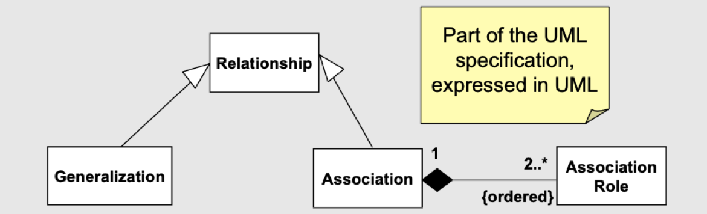
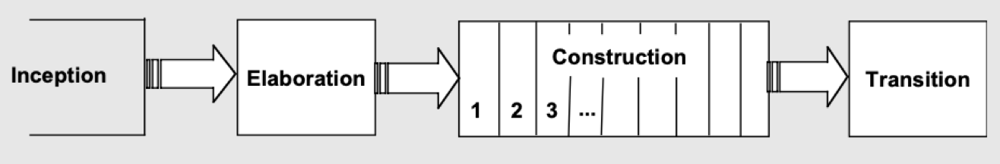

Read this first
This template was created by the SEBE Design Pod and is available for your use when creating your content. The template provides a variety of options for styling page text and images. Some tips on using this template:
There are additional layout options available in the '_SEBE_Advanced' template.
Important! This template is designed and tested to work with correctly formatted HTML code. Any deviation from this may result in the template failing to render as it should. For any assistance with HTML formatting, please contact SEBE CloudDeakin Support.
For more information about this template, visit the Making the most of web pages in SEBE CloudDeakin page in the Designing Your Unit section of the SEBE Staff Hub.
By changing the Heading 3 above to default, blue, turquoise or pink you can change the colour theme of your SEBE CloudDeakin template page.
When this page is published the Heading 3 above will be removed, but it will still be here in edit mode if you wish to change the colour theme.
There is no need to delete these instructions or the Heading 3 above. They are only visible in edit mode and will be removed when your page is published.
By using the keyword 'banner' as a <H3> (Heading 3), an image below that heading until the next <HR> (Insert Line from the dropdown next to the Insert Quicklink) will be included inside an Image Container that will render the image as a banner image.
There is no need to delete these instructions or the Heading 3 above. They are only visible in edit mode and will be removed when your page is published.
In Software Engineering, Object Oriented Analysis is the analysis of the problem in terms of object oriented concepts. A common tool used at this step is that of Unified Modelling Language (UML), and involves development of:
Note, UML has got nothing to do with Object Oriented Analysis. The only link is that UML is officially the notation of choice for object oriented modelling.
UML is a notation, not a software process or method. It can be considered as a meta-model.
A meta model is a rigorous definition of the notation and the rule governing relationships between its components. E.g., it represents Relationships, Generalizations, Associations, etc. among various entities as shown in the following figure:

It is based on the Rational Unified Process (RUP), which looks something like:

Let us discuss various elements of the RUP in following.
It is in Elaboration phase, UML modelling is very heavily used. For example, in elaboration phase, we look at closely,
We make use of Use Case Model (Use Case Diagrams), which details the interactions between the system and the outside world, as well as a Domain Model (Class Diagram) which provides a conceptual model of the environment the system is working in. It captures the most important types of objects in the context of the system and represents the things that exist, or events that transpire, in the system’s environment.
In the following three videos have a look at Use-case Modelling, Class Diagrams and Sequence/Collaboration Diagrams.